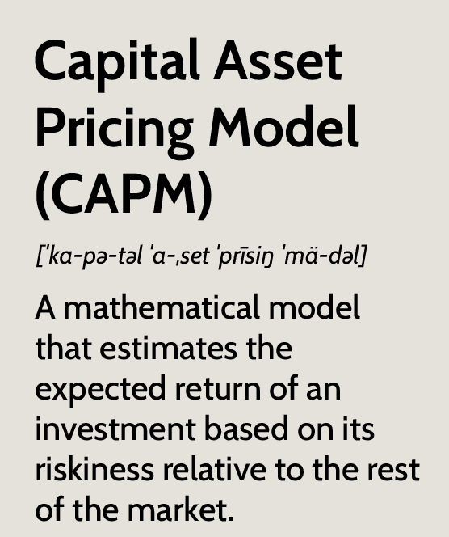

ResearchI am interested in the application of Machine Learning in various fields. For my bachelor's thesis I worked on applying Machine Learning for the purpose of conservation of marine life. The coursework for my MBA and recent internships at financial institutions have led me to realise my interdisciplinary interest at the intersection of computer science and finance. |
|  |
Evolution of the Capital Asset Pricing Model (CAPM) [Book Chapter]
Anmaya Agarwal, Pushpit Jain, Dr. Abhay Kumar Currently Under Review for Publication Project Code / Paper / We evaluated the rate of return using CAPM calculated for forecasted values against traditional CAPM which is based on historical data. |

|
Identifying Suspicious Fishing Activity Based on AIS Disabling Events.
Anmaya Agarwal, Jay Gala, Saketh Mantha, Yash Katariya, Dr. Prashasti Kanikar In review at the International Journal of Computer Information Systems and Industrial Management Applications Project Code / Paper / Release of a novel dataset of illegal fishing vessels and machine learning techniques for identifying them. (Extreme class imbalance) |

|
A Review on Detecting Suspicious Fishing Activity.
Anmaya Agarwal, Jay Gala, Saketh Mantha, Yash Katariya, Dr. Prashasti Kanikar Accepted at International Conference on Intelligent Computing and Networking (Highlight Paper), 2023 Paper A review on existing methods to detect Illegal, Unreported and Unregulated fishing. (Proceedings not yet released) |

|
Enhancing Illegal, Unreported, and Unregulated Fishing Detection through Feature Engineering.
Jay Gala, Anmaya Agarwal, Saketh Mantha, Yash Katariya, Dr. Prashasti Kanikar Presented at the SAS Curiosity Cup, 2023 (14th global rank achieved) Paper Feature engineering on a novel Illegal, Unreported and Unregulated fishing dataset |